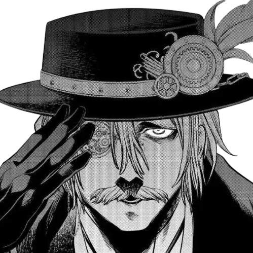
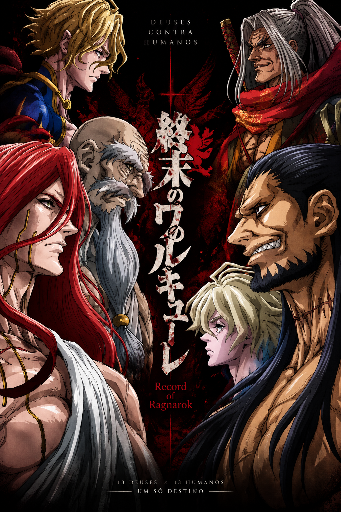
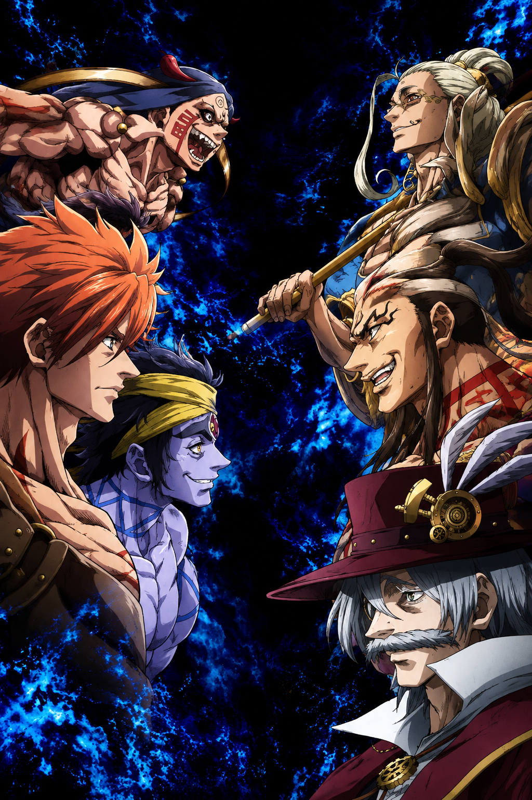
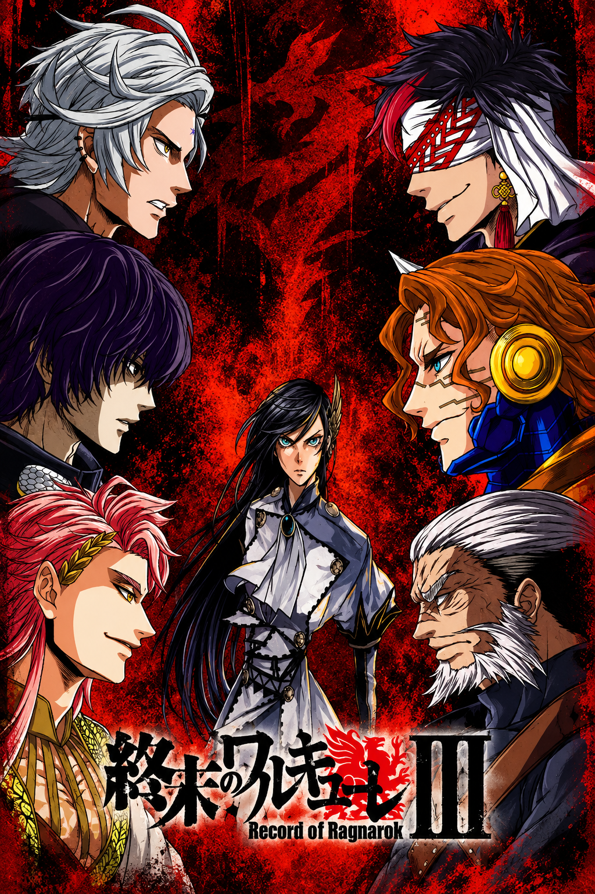

Sobre o Anime
Shuumatsu no Valkyrie (終末のヴァルキューレ) é uma série de anime que se passa em um mundo onde a humanidade está em perigo. A história segue uma jovem chamada Hilda, que se torna uma valkyrie e luta para salvar a humanidade.

Shuumatsu no Valkyrie (終末のヴァルキューレ) é uma série de anime que se passa em um mundo onde a humanidade está em perigo. A história segue uma jovem chamada Hilda, que se torna uma valkyrie e luta para salvar a humanidade.
25/11/2017 - 23/07/2026
17/06/2021 - 10/12/2025

Os deuses decidem destruir a humanidade, mas Brunhilde propõe o Ragnarök: 13 humanos contra 13 deuses em batalhas pela sobrevivência da humanidade. As primeiras lutas colocam guerreiros lendários como Lü Bu, Adão e Sasaki Kojiro contra Thor, Zeus e Poseidon.
Veja mais
O torneio continua com confrontos ainda mais intensos. Jack, o Estripador enfrenta Hércules; Raiden Tameemon luta contra Shiva; e Buda decide abandonar os deuses e lutar ao lado da humanidade, enfrentando Zerofuku e uma ameaça ainda maior.
Veja mais
A disputa fica cada vez mais equilibrada. Qin Shi Huang enfrenta Hades, Nikola Tesla encara Belzebu e Rei Leônidas desafia Apolo. Com o destino da humanidade cada vez mais próximo de ser decidido, cada batalha se torna crucial para o resultado do Ragnarök.
Veja mais1ª luta: Lü Bu vs. Thorㅤㅤㅤㅤㅤㅤㅤㅤ4ª luta: Jack, o Estripador vs. Hérculesㅤ7ª luta: Qin Shi Huang vs. Hades
2ª luta: Adão vs. Zeusㅤㅤㅤㅤㅤㅤㅤㅤ5ª luta: Raiden Tameemon vs. Shivaㅤㅤㅤㅤ8ª luta: Nikola Tesla vs. Belzebu
3ª luta: Sasaki Kojiro vs. Poseidonㅤ6ª luta: Buda vs. Zerofuku / Hajunㅤㅤㅤㅤ9ª luta: Rei Leônidas vs. Apolo